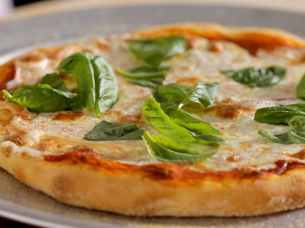
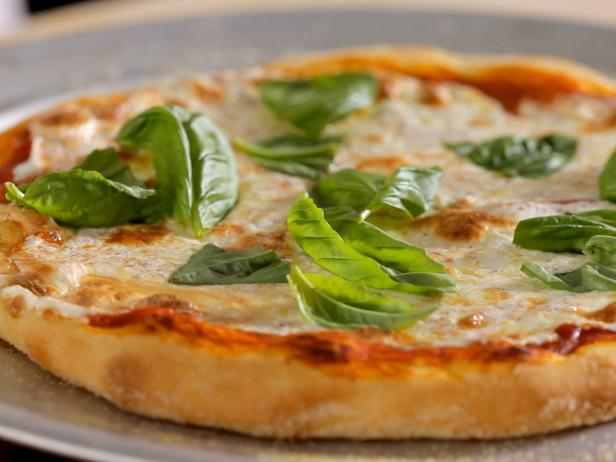

Start with a medium bowl that's been lightly coated with olive oil. Add warm water (about 110 degrees F), dry yeast and sugar. Note: The activated yeast feeds on the sugar and makes the dough rise. In another bowl, combine flour and salt. Have a fork, cutting board, knife, pizza pan and rolling pin (optional) handy.
In the bowl containing the flour and salt, make a well in the center and add the yeast. Tip: If the yeast doesn't foam, check the expiration date and water temperature (should be approximately 110 degrees F). Add the olive oil. Use a fork to pull the dry into the wet, then mix.
When the dough starts to come together, get in there with your hands and knead it for a few minutes on a lightly floured board. Use the heel of your hand to push the dough down and forward. Give it a few turns. You're done when the dough is a little tacky.
Place the kneaded dough into the oiled bowl, cover with plastic wrap and let it rise in a warm spot until it doubles in size. Tip: Chart the progress of the rising dough by using a marker on the plastic wrap to circle the size of the ball of dough at the beginning of the process. It can take anywhere from 1 to 2 hours for the dough to rise, depending on the recipe and ambient temperature.
If the dough leaves an indentation when poked, it's ready.
Once the dough has risen properly, use a knife to divide it. The larger the piece, the bigger the pizza; the smaller portions are easier to handle at home. Form into balls for individual pizzas, and place on a plate. Cover with a damp cloth. Let the balls of dough rest until you poke them and see an indentation.
Sprinkle a pizza pan with a little semolina for good separation and a nutty crunch. Place a ball of dough in the center of the pan and spread it out, using a rolling pin or your hands. Spin it. Pull the dough to the edges of the pan to thin out the center. Add some more semolina for better separation. Make sure the thickness is even
Top the spread dough with your favorite ingredients and bake in a 500-degree F oven for approximately 10 minutes. Perfect pizza every time. Watch our how-to video for more.